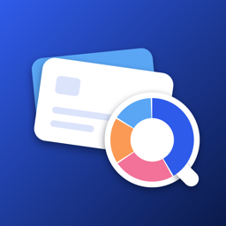

Privacy Policy
Cardsight · Last updated November 18, 2026
Summary
Your card statements stay on your iPhone and in your own iCloud. There are no accounts, no ads, no analytics and no tracking. Apple's Private Cloud Compute reads a statement first and doesn't keep it. Only if Apple can't, and only with your permission, the statement's text goes to our server to be read. Nothing you send is kept on our server or used to train AI models.
What the app stores
- The statements you add, their transactions, categories and your corrections.
- Your cards, reminders and settings.
This data is stored on your iPhone and, if iCloud is on, in your private iCloud database, which only you can read. It is never sent to us. You can delete it at any time in Settings.
How statements are read
Apple first. A statement is read by Apple Intelligence: Private Cloud Compute, or on your iPhone. Apple doesn't keep the data.
Our server, only with your permission. If Apple can't read a statement and you allow it (setting "Best reading"), the statement's text is sent to our server. Your name and card numbers are masked on your iPhone first, and the PDF itself never leaves your phone. Our server has it read by an AI model: Anthropic's Claude, and Google's Gemini as a backup, through their paid APIs, whose terms don't allow training on this data. The providers may keep request data for a short time to detect abuse, under their own terms (Anthropic, Google).
Categories. With the same permission, merchant names (never amounts or dates) may be sent to our server to sort categories.
What our server keeps. Nothing is written to disk. The answer is held in memory for up to 10 minutes so a retried request gets the same answer; merchant-name categories are held in memory to avoid asking again. Server logs contain only counts, timings and error codes, never statement text, merchant names or amounts.
Choose "Apple only" or "This device only" in Settings and nothing reaches us.
Device check
Apple App Attest confirms requests come from the real app. We keep an anonymous key ID and a counter, nothing that identifies you.
Permissions
Notifications (optional): local reminders before a card payment is due and before subscriptions renew, scheduled on your iPhone.
Purchases (Cardsight Premium)
Cardsight Premium is an App Store subscription. Payment is handled by Apple; we never see your payment details. We may use RevenueCat to record purchases and trials, with your App Store purchase history for Cardsight and a random, anonymous user ID. It receives none of your statements or app data. To apply the Premium quota, the app may send our server a signed App Store transaction for Cardsight.
Contacting us
If you email us, we use your message and email address only to answer you. Contact: info@enucuzsistem.com
Children
Cardsight does not collect personal data from anyone, including children.
Changes
If this policy changes, the new version will be published on this page with a new date.
Gizlilik Politikası (Türkçe)
Kart ekstrelerin iPhone'unda ve kendi iCloud'unda kalır. Hesap, reklam, analiz veya takip yoktur. Ekstreyi önce Apple'ın Private Cloud Compute'u okur ve saklamaz. Yalnızca Apple okuyamazsa ve yalnızca iznin varsa ("En iyi okuma") ekstrenin metni okunmak üzere sunucumuza gider; adın ve kart numaraların önce iPhone'unda maskelenir, PDF telefondan çıkmaz. Sunucumuz metni Anthropic'in Claude modeliyle, yedekte Google'ın Gemini modeliyle, ücretli API'leri üzerinden okutur; bu API'lerin şartları veriyle model eğitimine izin vermez. Aynı izinle kategorileri ayırmak için işyeri adları da (tutar ve tarih asla) sunucumuza gidebilir.
Sunucumuz hiçbir şeyi diske yazmaz; tekrar eden isteğe aynı cevabı verebilmek için cevap en fazla 10 dakika bellekte tutulur. Sunucu kayıtlarında ekstre metni, işyeri adı ya da tutar bulunmaz. Ayarlar'da "Yalnızca Apple" ya da "Yalnızca bu cihaz" seçersen hiçbir şey bize ulaşmaz.
Premium bir App Store aboneliğidir; ödemeyi Apple yapar, ödeme bilgilerini görmeyiz. Satın alma ve denemeleri kaydetmek için RevenueCat kullanabiliriz; RevenueCat'e ekstrelerin ya da seni tanıtan bir bilgi gitmez. Bize e-posta gönderirsen adresini yalnızca cevap vermek için kullanırız: info@enucuzsistem.com